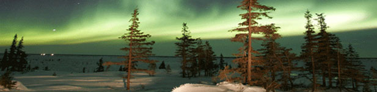

Skip to content
Home
Research
Institutes and centres
Space Physics
About us
Centre for
SPACE PHYSICS

Space Physics
About us
Research
People
Publications
Funding
HF Radar
Resources for teachers
Related websites
Funding
Share on facebook
Share on twitter
Share on email
Close